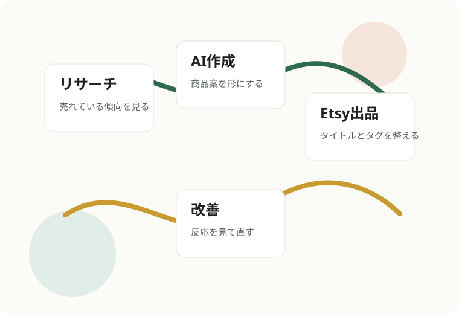

現在地診断シート
アクセス、クリック、商品ページ、作業の散らかりから、今の詰まりを整理します
AI × Etsy海外販売
商品リサーチからAIデザイン、Etsy出品、改善まで
海外販売の流れを学べる入口です
Drive内の実践資料をもとに、初心者向けに読み替えた公開初期版です

未来収入ラボは、AI、Etsy、Printifyを実際に検証しながら、調べ続けて止まりやすい人が次の一手を決めるための資料を整えています。
Free Gift
Drive内のチェックリストやニッチカレンダーをもとに、初心者が迷いやすい順番で無料資料をまとめています
アクセス、クリック、商品ページ、作業の散らかりから、今の詰まりを整理します
年間イベントと仕込み時期を見ながら、次に作るテーマを決めます
必要な準備、初期費用、最初の30日にやることを整理します
Etsy、Printify、商品画像、タイトル、タグで確認する項目をまとめます
参考画像をAIに読ませ、真似にならない商品化の方向性を整理します
読みやすさ、余白、配色、権利リスクなど、出品前の見直しポイントです
Path
自分で進めたい方にも、相談しながら進めたい方にも合うように、段階を分けています